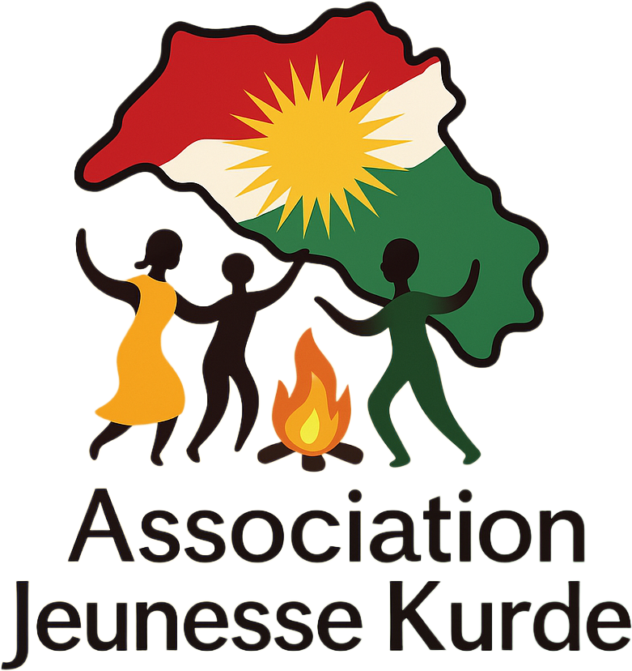

Kurdish Academy
Home
Kurmancî
Sorani
Culture
Alfabê (Alphabet)
Peyvên (Vocabulary)
Lêker (Verbs)
Rêziman (Grammar)
Guhdarîkirin (Listening)
Xwendin (Reading)
Nivîsandin (Writing)
Axaftin (Speaking)
ئەلفبێ (Alphabet)
وشەکان (Vocabulary)
کردار (Verbs)
ڕێزمان (Grammar)
گوێداری (Listening)
خوێندن (Reading)
نووسین (Writing)
قسەکردن (Speaking)
History
Geography
Politics
Literature
Music
Dance
Food
Nivîsandin (Writing) - Under Construction
This section will be available soon.
We are currently working on the content for this page.